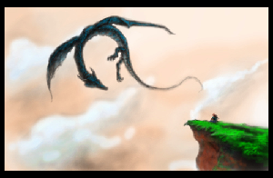
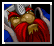
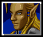
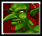
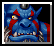
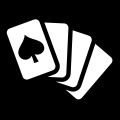
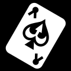
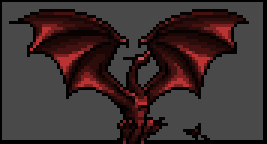

Dragon Dune
A game for 4 players, inspired by Avalon-Hill's Dune board game.
Formally Dragons, Usurpers, and Empires (DU&E), but the Internet hates ampersands in your project name.
So, let’s justify this things existence. Dune is a great game, but it has it’s drawbacks. The rules are kind of ambiguous. It can take a while to play. It can be a little cutthroat for beginners. Actually, it can be cutthroat for everyone. Rex attempted to iron out some of these idiosyncrasies, but they got rid of things like binding agreements, which seem as fundamentally important to the game Dune.
This is an attempt to make a resource light game in the style of Dune, that is friendlier to beginners, easier logistically (4 players instead of 6), with greater rule clarity, and with a strong sense of theme (taking place in a fantasy setting).
About This Game
The game is version 1.0.
This game is licensed Creative Commons Share-Alike 4.0.
Contact: dragon.dune.game@gmail.com
Github: https://github.com/dragon-dune/dragon-dune
Web: http://dragondune.inkfox.org
What You Need to Play:
- The Board
- Faction Unit Markers (10 per faction)
- Gold Markers (approximately 50)
- Deck of Standard Playing Cards
- One Six-Sided Die
Board:
Special Rules:
Special Rules:
- Territory 0• is the Great Mountain and is neutral territory. Players will never battle in territory 0•.
- • territories represent forests. Units in a forest territory are safe from dragon attack.
- ★ territories represent castles. Players or alliances need to control 3 castles in order to win the game. Units in a castle are safe from dragon attack.
- A player controls a castle if they alone have at least one unit there.
- Players in control of 3★ or 5★ have access to griffins and receive a travel bonus. They may move through four territories in the movement round (instead of 2).
- Players may never have more than 10 units between on the board and the player's graveyard at any one time.
- No more than two players may have units in a castle at one time. This does not count hidden units.
- Public agreements made in the game are binding and must be carried out, if possible. Public agreements can only be broken if all parties involved agree to.
Factions:

Dwarves (King of Diamonds):
The Dwarves empire has fallen. The are forced to sell artifacts from their treasuries with the hope of one day reclaiming their birthright.
Start With: 5 Gold, 1 Artifact.
Starting Units: None.
Special:
- The Dwarves collect all gold spent by other players on on artifact cards. Gold spent by the Dwarves on artifact cards goes to the bank.
- Special Card (Ace): You may use an ace as a Sabotaged Artifact (Jack) of the same suit.
- Alliance Power: The Dwarves may use their traitor and sabotaged artifact cards on their allies behalf in battle.

Elves (King of Hearts):
The ancient Elves have vast arcane knowledge, but they will need to be clever to turn knowledge into gain.
Start With: 5 Gold, 1 Artifact.
Starting units: 5 units in 5★.
Special:
- The Elves may see the artifact that is up for bid before bidding begins.
- In battle with the Elves (or their allies), the Elves may ask the color of their opponents artifact card, the value of the artifact card, or to know how many units they are sending in to battle before selecting their own card and units.
- At the beginning of the Recruitment and Movement Round, the Elves may see what the next event card will be.
- Elven units may go into hiding in a territory in order to escape conflict. Hidden units act in every way as though they did not exist. Hidden units may only come out of hiding if they move into a empty territory or they may declare that they are coming out of hiding at the end of the at the beginning of a turn.
- Special Card (Ace): You may discard a special card to place up to 2 units on any one territory for free.
- Alliance Power: Elves may ask a battle question on their allies behalf.

Goblins (King of Clubs):
The Goblins are ruthless mercenaries who fight for coin, even against their own king. Their thirst for treasure finds them with a trove of artifacts.
Start With: 3 Gold, 2 artifacts.
Starting units: 5 units in 10★.
Special:
- Goblins collect all gold spent on hiring Goblin mercenaries. Gold spent by the Goblins on mercenaries goes to the bank.
- The Goblins (and their allies) pay half price (rounded up) for Goblin mercenaries.
- When the Goblins win an artifact cards, they get a second artifact card that is hidden from the Elves.
- The Goblins may have up to 8 artifact cards (instead of 4).
- The Goblins may disband units at the beginning of the movement round (instead of at the end).
- Special Card (Ace): You may discard a special card to stop a player from hiring Goblin mercenaries that turn.
- Alliance Power: You pay half price (rounded up) for Goblin mercenaries.

Orcs (King of Spades):
The Orcs control the wild territories of the west. They worship the mighty Red Dragon.
Start With: 3 Gold, 1 artifact.
Starting units: 5 units split between 1★, 9• & 16•.
Special:
- Orcs may not hire mercenaries. Instead, they my raise armies in Orcish territories (16, 16• , 17, 18, 1, 1★, 2, & 2s) at no cost.
- The Orcs may move units three territories in the movement round (instead of 2).
- The Orcs take only half losses (rounded up) against Dragons.
- The Orcs take no losses from the Red Dragon, which they worship.
- The Orcs may conscript 2 units (instead of 1).
- The Orcs may ride the Red Dragon when it appears, if they are in the same location.
- The Orcs may remove 3 units from the graveyard on their Recruitment and Movement round (instead of 2 units).
- If no player has won at the end of the game, then Orcs are the default winner.
- Special Card (Ace): In the Dragon round, you may move one stack of units to any location.
- Alliance Power: You may share your default victory with your ally.

Cards:
- Dwarves (King of Diamonds)
- Elves (King of Hearts)
- Goblins (King of Clubs)
- Orcs (King of Spades)
- Orc Usurper (Queen of Spades)
- Dwarven Usurper (Queen of Diamonds)
- Elven Usurper (Queen of Hearts)
- Goblin Usurper (Queen of Clubs)
- Sabotaged Clubs Artifact (Jack of Clubs)
- Sabotaged Diamond Artifact (Jack of Diamonds)
- Sabotaged Heart Artifact (Jack of Hearts)
- Sabotaged Spade Artifact (Jack of Spades)
- Special Card (Aces, All Suits)
- Artifacts (2 to 6, All Suits)

Special Card Actions:
Aces are considered Special Cards.
Players may discard a Special Cards to:
- Not pay for an artifact card in the bidding round.
- Pay half of regular price for mercenaries in the Bidding and Recruitment round.
- Move through one additional territory with your moved units in in the Bidding and Recruitment round.
- Ask what artifact is going to be played by your opponent in battle.
- May be played as an artifact in battle with a value of 1.
How To Play:

Rounds:
Setup:
- The board is set up. Players place their starting units.
- One player is picked at random to be the Stating Player.
- Each player is given the King of their faction from the deck. They place this card face up in front of them. This is their graveyard.
- Each player is dealt one of the Queens face down. Players may look at them.
- Each player is dealt one of the Jacks face down. Players may look at them.
- Each player is dealt one artifact card face down. Players may look at them.
- The Goblins are given a second artifact card face down, which they may look at.
I. Dragon Round:
A six-sided dice is rolled, and the dragon marker is moved from its starting position that amount through the board, in numerical order. The dragon goes through all territories with the same numerical value, so the dragon would go to both 1★ and 1 when the dragon was at 1.
- Note that the dragon marker never moves to territory 0•
Any units or gold the dragon marker encounters as it moves through the board that are not in a castle or forest are removed form the game.
- Note that Orcs only take half losses, rounded up.
- When the dragon marker reaches territory 18, it will next move to the 1★ and 1.
In the Recruitment and Movement round, players may never recruit units at or move units through or to a territory with the dragon marker.
II. Event Round:
- An event card is flipped over.
- Gold is placed on that location, unless the dragon marker is at that location. If the dragon marker is at that location, then no gold is placed this turn.
If the event card is the same color as the games current Starting Player, then the Red Dragon has attacks the territory at the top of the event discard pile (the territory where the previous event took place). All units and gold in that territory are lost.
- If the Orcs are in the same territory as the Red Dragon, they may move some or all of their units at that location to any other location.
- In response to the appearance of the Red Dragon, a Great Council is called immediately. This is the only time players may form or break alliances. The Great Council continues until all players have passed or formed an alliance.
- The dragon marker does NOT go to the Red Dragons location. The dragon marker is only moved on the dragon round.
III. Bidding Round:
The Starting Player is the first Starting Bidder.
One card is placed up for bid for each player that does not have their maximum number of cards. For each card up for bid, one at a time.
- The Elves, and only the Elves are shown the card.
- Players, starting with the Starting Bidder, bid on card.
The winner receives the card and pays the Dwarves.
- If the Dwarves win the artifact, their payment is payed to the bank.
- The winner may play a Special Card to avoid paying.
The whole process repeats for the next player in player order. For each card, the next player after the current Starting Bidder (in player order) becomes the next Starting Bidder.
IV. Recruitment and Movement Rounds:
The Elves must declare if any of their units are coming out of hiding.
Then, starting with the Starting Player, and the proceeding in player order, all players may (in the following order):
- If they current player is the Goblins, they may disband some or all of the units in one territory. Disbanded units are removed from the board, but do not go to the graveyard.
The current player may remove 2 units from the players graveyard.
- On the Orcs turn, they may remove 3 units from the graveyard.
- The current player may conscript 1 units from the bank onto any territory where they already have a unit. This action is free.
The current player may hire Goblin mercenaries at a cost of 1 gold per mercenary if it is in a city, or 2 gold per mercenary if it is into any other territory. The payment is made directly to the Goblins.
- Goblin mercenaries may not be hired in any territory where the dragon marker is present.
- Payments made by the Goblins are half price, rounded up.
- Payments made by the Goblins are paid to the bank
- The player may play a Special Card to pay half price, rounded up.
The current player may move some or all units from one location through two territories.
- Units may not move through or to any location where the dragon marker is present.
- The Orcs may move through three territories.
- If the player has access to griffins (if they control of 3★ or 5★) then they may move through four territories.
- The player may play a Special Card to make a second movement this round.
- If the current player is not the Goblins, they may disband some or all of the units in one territory. Disbanded units are removed from the board, but do not go to the graveyard.
Then the whole process repeats for the next player in player order.
V. Battle Round:
Starting with the Starting Player, and the proceeding in player order, if a player has units in the same territory another player, they shall do the following (in the following order):
- The player whose turn it is is the attacking player.
- If the Elves are taking part in the battle, they may ask what one of the artifacts is that their opponent will play, or ask the size of the army they will send into battle. The answers to these questions are binding.
- Each player secretly records how many units they will send as an army into battle, and they may select one artifact to use in the battle. For each unit sent into battle the army receives two points of battle value.
- Players reveal the size of their armies and their artifacts selected.
- For each color (red and black), whomever played the lower numbered artifact of that color, gets that amount added to their battle value.
- The player with the highest battle value wins the battle. In the case of a tie, the attacker wins.
- The winner removes all units used in an army in the battle.
- The loser removes all tokens from the territory, regardless of whether or not they took part in the battle. The loser also discards all artifact cards used.
- If a player who took part in the battle has a their opponent as their usurper, and has a sabotaged artifact of the same suit as the artifact their opponent played, then they may declare their treachery and automatically win the battle, taking no losses. The loser removes all units from the territory (even those not used in the battle), and discards any artifacts used in the battle.
- This process continues until all battles for a player are resolved.
- Then the whole process repeats for the next player in player order.
VI. Collection Round:
- All players receive 1 gold.
- Players collect gold from any territories they control. They can collect two gold for every unit in the territory, up to the amount of gold in the territory.
- If players wish, they may discard some or all of their artifacts.
VII. Victory Round:
- The next player in player order becomes the Emperor.
- The next player (in player order) after the current Starting Player becomes the Starting Player for the next turn.
- If any unallied player controls three castles, or if any alliance controls four castles, then they have won the game.
- If 8 turns have passed without a winner, then the Orcs win.
- If then game has not ended, then it goes back to the Dragon Round.
Advanced Faction Powers:
What could be more Dune-like than having optional rules that no one can agree on. Here are additional faction powers that may add depth or help balance the game.
- Orcish Plunder: The Orcs may steal artifacts. When they win a battle, they may take one of your opponents artifacts (randomly chosen), which they may then keep or discard for a reward of 1 gold.
- Dwarven Elite Warriors: The Dwarves are fierce warriors. They have two special units, which act as normal units in every way except that each unit counts as two units for the purpose of combat.
- Elven Blessing: After the Elves have lost 3 units in combat, they are given the power to invoke a blessing for one battle once per turn that gives them an bonus battle point and makes it so they can not be sabotaged for that battle.
- Goblin Initiative: The Goblins may take their turn in the Recruitment and Movement round at any time, regardless of player order.
Balancing Options:
An easy way to balance the game is to give a player more gold or to give them a greater reserve of units (for example, having 12 units available instead of 10). They
Another way balancing the game is to only require 3 castles to win the game for alliances.
Special Thanks:
I would like to thank the creators of Dune and Rex.
I would like to thank artists that make their work available to the open source community.
- Jinn’s Icons (by Jinn) https://opengameart.org/content/jinns-icons
- Wyvern and Girl (by 5hiroi) https://opengameart.org/content/wyvern-and-girl
- Dragon head icon (by Lorc) http://game-icons.net/lorc/originals/dragon-head.html
- Crossed swords icon (by Lorc) http://game-icons.net/lorc/originals/crossed-swords.html
- Locked chest icon (by Lorc) http://game-icons.net/lorc/originals/locked-chest.html
- Card pickup icon (by Quoting) http://game-icons.net/quoting/originals/card-pickup.html
- Mounted knight icon (by Skoll) http://game-icons.net/skoll/originals/mounted-knight.html
- Coins icon (by Delapouite) http://game-icons.net/delapouite/originals/coins.html
- Poker Hand icon (by Lorc) http://game-icons.net/lorc/originals/poker-hand.html
- Ace icon (by Lorc) http://game-icons.net/lorc/originals/ace.html
- Overworld Tiles (by Buch) https://opengameart.org/content/overworld-tiles-0
- Throne king icon (by Delapouite under CC BY 3.0) http://game-icons.net/delapouite/originals/throne-king.html